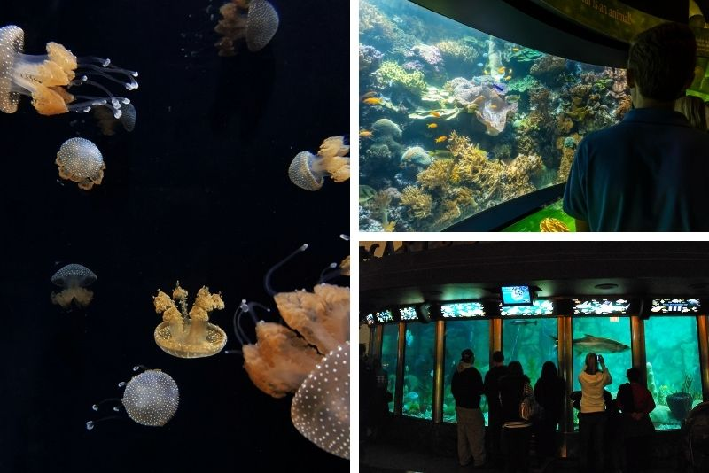

Shedd Aquarium is an indoor public aquarium in Chicago. Opened on May 30, 1930, the 5 million US gal aquarium holds about 32,000 animals and is the third largest aquarium in the Western Hemisphere, after the Georgia Aquarium and Monterey Bay Aquarium.
